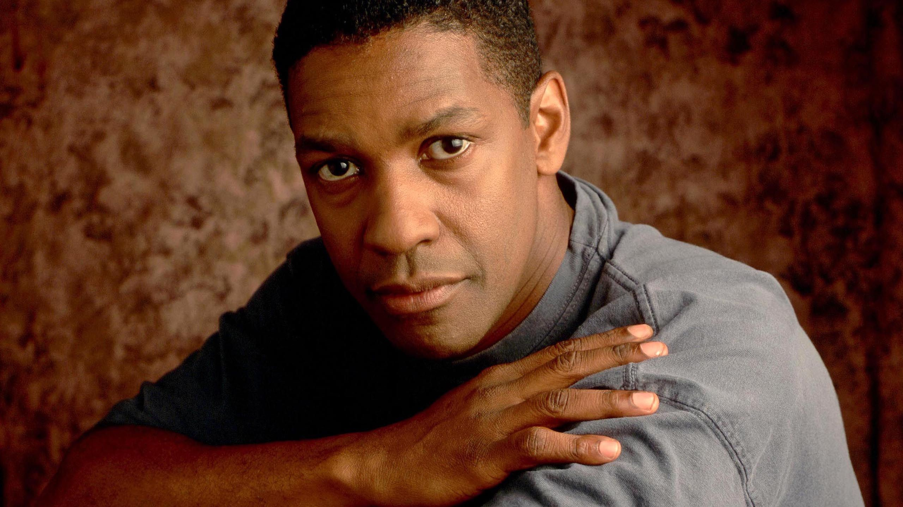

Carreira

Denzel Washington entrou na Universidade Fordham para seguir o curso
de jornalismo, que deixou inacabado, mas formou-se em teatro pela
mesma universidade, para seguir a carreira de actor. Estreou-se em
telefilmes e obteve sucesso na telenovela St. Elsewhere de 1982.
A sua primeira grande oportunidade cinematográfica foi fornecida pelo
realizador Richard Attenborough que o convidou para desempenhar o
papel do activista sul-africano Steve Biko em Grita Liberdade / Um
Grito de Liberdade em 1987 e dois anos depois conquistou o Óscar de
Melhor Ator (coadjuvante/secundário) pelo seu desempenho de soldado
num batalhão inteiramente negro durante a guerra civil americana em
Tempo de Glória, de 1989. Voltaria a repetir a nomeação desta vez para
Melhor Ator (principal) pelo seu retrato do líder revolucionário
Malcolm X de 1992. A sua carreira solidificou-se em êxitos de
bilheteira como The Pelican Brief ao lado de Julia Roberts,
Filadélfia, co-estrelado por Tom Hanks - que ganhou seu primeiro Óscar
neste filme - o thriller Crimson Tide, de 1995, com Gene Hackman e o
filme de guerra Coragem Debaixo de Fogo / Coragem Sob Fogo 1996.
Depois de protagonizar mais um thriller, The Bone Collector em 1999,
obteve mais uma nomeação para Melhor Ator pelo filme The Hurricane,
baseado na história verídica do pugilista Rubin 'Hurricane' Carter,
acusado injustamente de ter participado num duplo assassinato e
encarcerado durante vinte anos até que um jovem fã, ao ler a sua
autobiografia, tenta limpar o seu nome. Washington voltaria à
cerimónia dos Óscares em 2001, mas como vencedor, pelo seu desempenho
no policial Dia de Treino / Dia de Treinamento, interpretando "Alonzo
Harris", um agente do departamento de narcóticos que, ao acolher um
agente noviço (Ethan Hawke), acaba por demonstrar a sua faceta de
corrupto. Ao aceitar o prémio, Denzel o dedicou ao ator Sidney
Poitier, homenageado pelo conjunto de sua carreira nessa mesma noite
única, que entrou para a história do cinema e da Academia como a noite
em que dois atores negros, Denzel Washington e Halle Berry, venceram
as categorias de Melhor Ator e Melhor Atriz. Consagrado como uma das
principais estrelas de Hollywood, continuou a apostar nos registros
dramáticos: em John Q de 2002, foi um pai desesperado que decide
manter como refém todo um hospital como protesto por não procederem a
um transplante de coração ao seu filho e estrelou em 2004, ao lado de
Meryl Streep, Sob o Domínio do Mal, sinistra e competente refilmagem
do sucesso dos anos 60, com Denzel no papel que pertenceu a Frank
Sinatra.